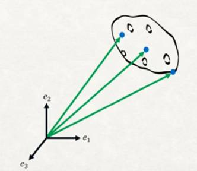
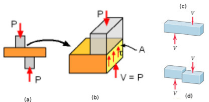
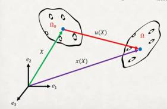
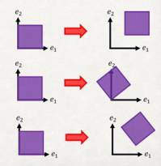

Gerilme Tensörü (Strain Tensor)
Önce nesneleri nasıl temsil ettiğimizden bahsedelim. Diyelim ki elimizde bir patates var. Fakat bu patatesin matematiksel olarak bir anlamı yok. Eğer bu nesneyi $R^3$ uzayında temsil etmek istiyorsak, onun üzerindeki belli seçilmiş noktalar sayesinde bunu yapabiliriz.
Nesne uzerindeki mavi noktalar bu secilmis noktalari gosteriyor.
Seçilmiş noktaların kordinatı bir referansa göre alınmalı, $e_1,e_2,e_3$ şeklinde bir baz bu işi yapabilir. Artık bu baza, kordinat sistemine izafi olarak patates üzerindeki her noktayı bir vektör olarak temsil edebiliyoruz. Altta örnek olarak üç tane seçiliş noktayı gösterdik,

Daha fazla nokta da seçebilirdik, tüm seçilmiş noktalardan gelen vektörlerin kümesi cisim hakkında bize bir konum, durum bilgisi verecektir, bu konuma biçim değiştirme öncesi noktaların konumu $\Omega_0$ diyelim, ya da referans konumu. Nesne üzerindeki değişimler, özellikle bu ders sonlu öğeler (finite elements method, FEM) dersi olduğu için deformasyon değişimleri referans vektörlerinin nasıl değiştiği üzerinden incelenebilir. İlk konumdaki bir vektörü, $X$ diyelim, değişimi $f$ fonksiyonu yapıyor olsun, sonuç vektörü $x$ olacak, yani $x = f(X)$.

Üstteki resimde örnek bir değişim görüyoruz; yana kayma, dönme, uzama var. Değişimi gerçekleştiren $f$ fonksiyonu. Bu ders için farz edilen $f$'nin birebir ve örten (bijective) olduğu, liner cebirden hatırlarsak bu $f$'nin tersi alınabilir olduğu anlamına geliyor, yani elimde deforme edilmiş konum var ise, $f$'nin tersi ile başlangıç konumuna dönebilirim. Diğer bir faraziye fonksiyonun sürekli (continuous), ve pürüzsüz (smooth), yani türevi alınabilir olduğu. Katı cisim mekaniğinde türevi alınabilirlik önemli bir faraziyedir, gerçek hayatta böyle mi, her zaman değil muhakkak, hatta bir bakıma bu sebepten dolayı FEM'e ihtiyacımız var.
Ayrıca bize ileride lazım olabilecek bir üçüncü vektör $u$ da tanımlayabliriz, bu vektör varılan konumu referans konumuna direk ilintilendiriyor. Vektör $u$'ya yer değişim fonksiyonu denir. Pozisyon fonksiyonu ile karıştırmayalım, o küçük $x$, bu yer değişim fonksiyonu $u$.

Fakat bu tüm grafiğe baktığımızda $u$'nun aslında vektör çıkartma operasyonunu gösterdiğini fark edebiliriz, yani $u = x - X$.
Üç tür katı gövde değişimine bakalım şimdi, not katı demek gövde esneyip, uzamıyor demek.
Katı Gövde Yer Değişimi: $x = X + c$, ki $c$ sabit bir vektör. Pür yer değişimi olduğu için basit bir toplanma işlemi sadece. Şimdi bildiğimiz sonuç konumu formülünü yazarsak, $u = x - X$ bu formülde önceki $x$'i geçirelim, $u = X + c - X$ yani $u = c$.
Katı Gövde Dönüşü: $x = Q X$, formüldeki $Q$ bir dönüş matrisidir. Tekrar yer değişim formülünü yazalım, $u = x - X$ ve önceki $x$'i yerine koyalım, $u = QX - X$, tekrar düzenlersek, $u = (Q-I)X$.
Katı Gövde Hareketi: $x = QX + c$, bu kalem aslında önceki iki kalemin birleşimi, hem dönüş hem de yer değişimi var. Çoğunlukla fizik problemlerinde bu kavramdan bahsedilir. Yine $u$'yu düşünürsek $u = (Q-I)X + c$ elde ederiz.

Üsttekiler değişim şekli ama hala gerinim, esneme, küçülme türü şekil değişimlerini görmedik. Diğer değişimler şunlar,
Her Yönde Uzama ve Küçülme (Üniform Extension and Contraction)
Her kordinat ekseninde uzama var ise, mesela $x_1 = k_1 X_1$, $x_2 = k_2 X_2$, $x_3 = k_3 X_3$, ki $k_i > 0$ reel sayı olmak üzere. Bu değişimleri matris ile şöyle gösterebiliriz,
$$ x = \left[\begin{array}{c} x_1 \\ x_2 \\ x_3 \end{array}\right] = \left[\begin{array}{ccc} k_1 & 0 & 0 \\ 0 & k_2 & 0 \\ 0 & 0 & k_3 \end{array}\right] \left[\begin{array}{c} X_1 \\ X_2 \\ X_3 \end{array}\right] = \left[\begin{array}{c} k_1 X_1 \\ k_2 X_2 \\ k_3 X_3 \end{array}\right] $$
[devam edecek]